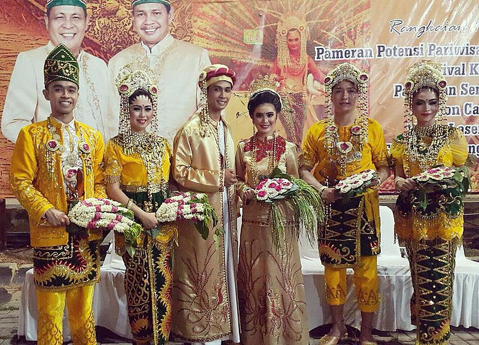
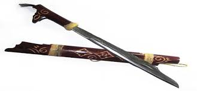

Rumah Adat
 Ini adalah rumah adat yang paling terkenal dan menjadi simbol budaya Banjar.
Ciri khasnya adalah atap yang tinggi dan melancip, serta dibangun di atas tiang (panggung)
Rumah ini dulunya dihuni oleh keturunan bangsawan dan memiliki nilai sejarah yang tingg.
Ini adalah rumah adat yang paling terkenal dan menjadi simbol budaya Banjar.
Ciri khasnya adalah atap yang tinggi dan melancip, serta dibangun di atas tiang (panggung)
Rumah ini dulunya dihuni oleh keturunan bangsawan dan memiliki nilai sejarah yang tingg.
Pakaian Adat
 umumnya dikenal sebagai Bagajah Gamuling Baular Lulut untuk penganti pria dan Baamar Galung Pancar Matahari untuk pengantin wanita dalam upacara pernikahan adat Banjar.Tarian Adat
 Tarian ini awalnya hanya dipentaskan di lingkungan kerajaan,
tetapi sekarang telah menjadi bagian dari kebudayaan masyarakat umum.
Tarian ini awalnya hanya dipentaskan di lingkungan kerajaan,
tetapi sekarang telah menjadi bagian dari kebudayaan masyarakat umum.
Alat Musik Tradisional
 Alat musik tradisional Banjar yang terkenal antara lain adalah Panting, Kuriding, Babun, dan Gamelan Banjar.
Musik Panting, yang menggunakan alat musik petik bernama Panting, merupakan kesenian khas Suku Banjar.
Alat musik tradisional Banjar yang terkenal antara lain adalah Panting, Kuriding, Babun, dan Gamelan Banjar.
Musik Panting, yang menggunakan alat musik petik bernama Panting, merupakan kesenian khas Suku Banjar.
Aksara
 Aksara Banjar, juga dikenal sebagai Jawi,
adalah aksara yang pernah digunakan oleh masyarakat Banjar di Kalimantan Selatan untuk menulis bahasa Banjar,
terutama dalam konteks keagamaan dan kesusastraan.
Aksara Banjar, juga dikenal sebagai Jawi,
adalah aksara yang pernah digunakan oleh masyarakat Banjar di Kalimantan Selatan untuk menulis bahasa Banjar,
terutama dalam konteks keagamaan dan kesusastraan.
Pusaka / Senjata Tradisional
 Mandau, sebuah senjata tajam mirip parang yang merupakan ciri khas suku Dayak, serta senjata lainnya seperti keris bujak beliung dan tombak Banjar.Karya Seni
 Karya seni di Kalimantan Selatan, khususnya di Banjarbaru, meliputi berbagai bentuk seni tradisional dan modern. Beberapa contohnya adalah seni pertunjukan seperti Madihin, Mamanda, dan Japen; seni rupa seperti mural yang menghiasi dinding kota, serta kerajinan tangan seperti Getah Nyatu. .
Karya seni di Kalimantan Selatan, khususnya di Banjarbaru, meliputi berbagai bentuk seni tradisional dan modern. Beberapa contohnya adalah seni pertunjukan seperti Madihin, Mamanda, dan Japen; seni rupa seperti mural yang menghiasi dinding kota, serta kerajinan tangan seperti Getah Nyatu. .